Laboratoara sy toeram-pampiharana
Mampahafantatra ny mpianatra ny tontolon'ny asa sy ny fomba fiasa arak'asa.
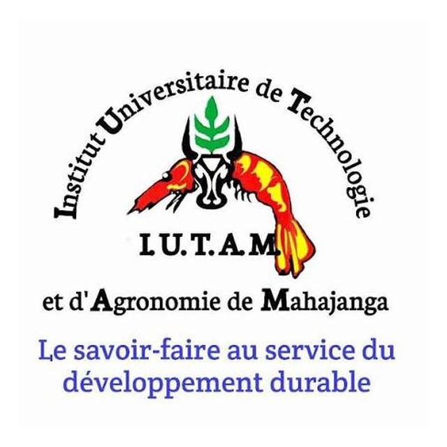
Institiota Oniversitera momba ny Teknolojia sy ny Agronomia ao Mahajanga: fanofanana matihanina amin'ny Siansa Agronomika, manomboka amin'ny Laisansa Matihanina ka hatramin'ny Injeniera amin'ny ambaratonga Mastera.
Jereo ny fanofanana Fepetra fidiranaSekoly ambony mifantoka amin'ny fanofanana arak'asa eo amin'ny sehatry ny siansa momba ny fambolena sy ny fiompiana, ao anatin'ny rafitra LMD (Laisansa–Mastera–Doktora). Manolotra fiofanana mitondra mankany amin'ny diplaoma Laisansa Matihanina sy ny diplaoma Injeniera amin'ny ambaratonga Mastera izy.
Bakalorea + 3: telo taona aorian'ny Bakalorea. Taranja iombonana: Biolojia Ampiharina.
Bakalorea + 5: roa taona aorian'ny Laisansa. Taranja: Agro-biodiversita sy Tontolo iainana.
Mampahafantatra ny mpianatra ny tontolon'ny asa sy ny fomba fiasa arak'asa.
Hetsika sy santionany manodidina ny roapolo no aseho amin'ny mpianatra sy ny mpitsidika.
Toerana anaovana fikarohana sy famokarana, izay ivon'ny fampianarana mifototra amin'ny fampiharana.
Fampianarana ampiasana fitaovana fampisehoana sary sy feo, ary efitrano informatika misy Wi-Fi, araka ny rafitra LMD.
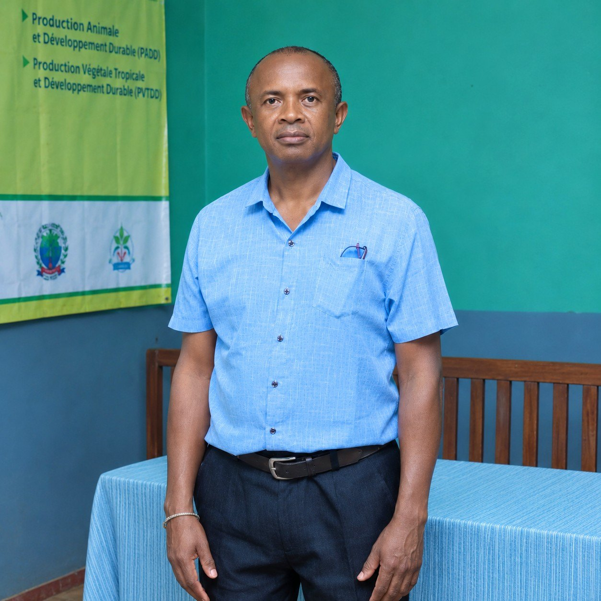
Ao Mahajanga no misy ny Ivontoeram-pampianarana eny amin'ny Anjerimanontolo momba ny Teknolojia sy ny Agronomia (IUTAM), izay mifandray amin'ny Anjerimanontolon'i Mahajanga. Sekoly ambony mifantoka amin'ny fanofanana arak'asa izy, ka manofana teknisianina sy injeniera eo amin'ny sehatry ny siansa momba ny fambolena sy ny fiompiana, manomboka amin'ny Laisansa Matihanina ka hatramin'ny diplaoma Injeniera amin'ny ambaratonga Mastera.
Tsy ao an-dakilasy ihany no ianarana: fampiharana, fifanakalozana ary fahombiazana.
Tsy voafetra ao an-dakilasy ny traikefa iainan'ny mpianatra ao amin'ny IUTAM. Manomboka amin'ny asa fampiharana ka hatramin'ny fiofanana anaty toeram-piasana, ny ivontoeram-pampianarana dia manome tontolo iray ahafahan'ny mpianatra mampivelatra ny fahaizany, manamafy ny fifandraisana ary manomana hoavy mifanaraka amin'ny fampandrosoana maharitra.
Ny lanonana fanolorana diplaoma dia mampivondrona ny mpianatra, ny fianakaviany ary ny mpampianatra mba hiara-mankalaza ny fahombiazana. Na Laisansa Matihanina izany na diplaoma Injeniera amin'ny ambaratonga Mastera, ny fahazoana diplaoma no tanjona iray lehibe amin'ny lalam-piofanana.
Mampahafantatra ny mpianatra ny tontolon'ny asa arak'asa. Mikraoskaopy, asa fampiharana, toerana fampirantiana ary toeram-pambolena fampiharana: ao amin'ny IUTAM, ampifandraisina amin'ny fampiharana eny an-kianja ny fahalalana ara-teôria.
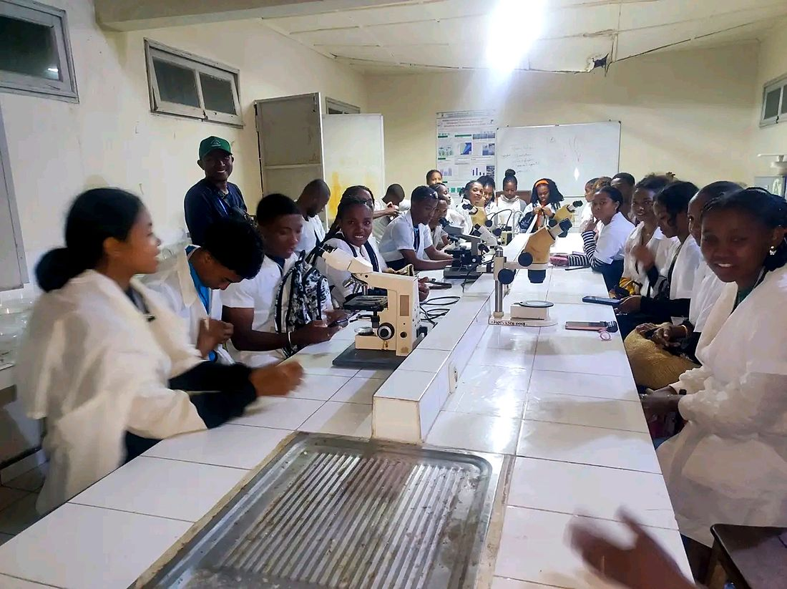
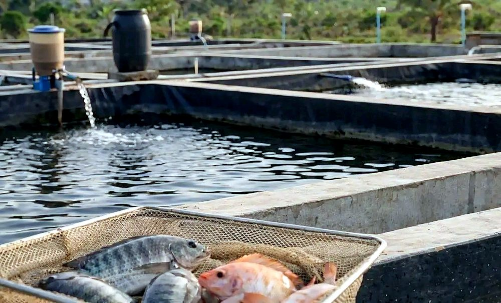
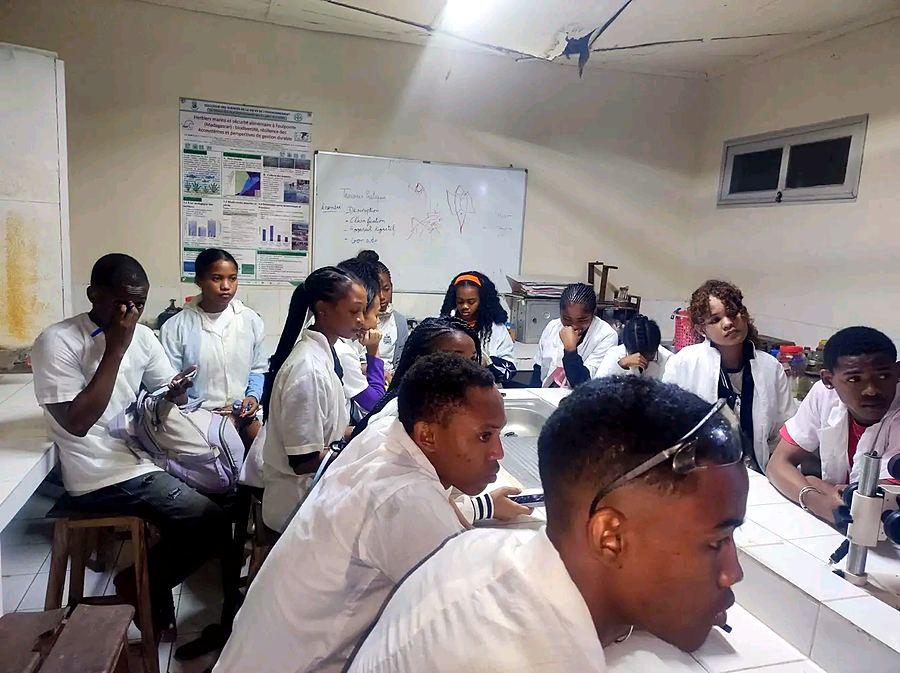
Sehatra: Siansa momba ny fambolena sy ny fiompiana.
TaranjaBiolojia Ampiharina
Mahazo fototra ara-tsiansa ny mpianatra, ary mianatra ireo teknika sy teknolojia ampiharina eo amin'ny sehatry ny fambolena sy ny fiompiana ary ny tontolo iainana.
TaranjaAgro-biodiversita sy Tontolo iainana
Manofana injeniera manam-pahaizana momba ny siansa sy ny teknolojian'ny zavamananaina, ny bioteknolojia, ny siansan'ny tany, ny indostrian'ny sakafo, ny fikarohana, ny fanavaozana ary ny fampandrosoana maharitra.
Famokarana biby sy fampandrosoana maharitra.
Laisansa takiana: Fiompiana, Tontolo iainana, Jono sy Fiompiana anaty rano, na lalam-piofanana mitovy lenta.Jereo ny fepetra fidirana →Famokarana zavamaniry tropikaly sy fampandrosoana maharitra.
Laisansa takiana: Fambolena, Tontolo iainana, na lalam-piofanana mitovy lenta.Jereo ny fepetra fidirana →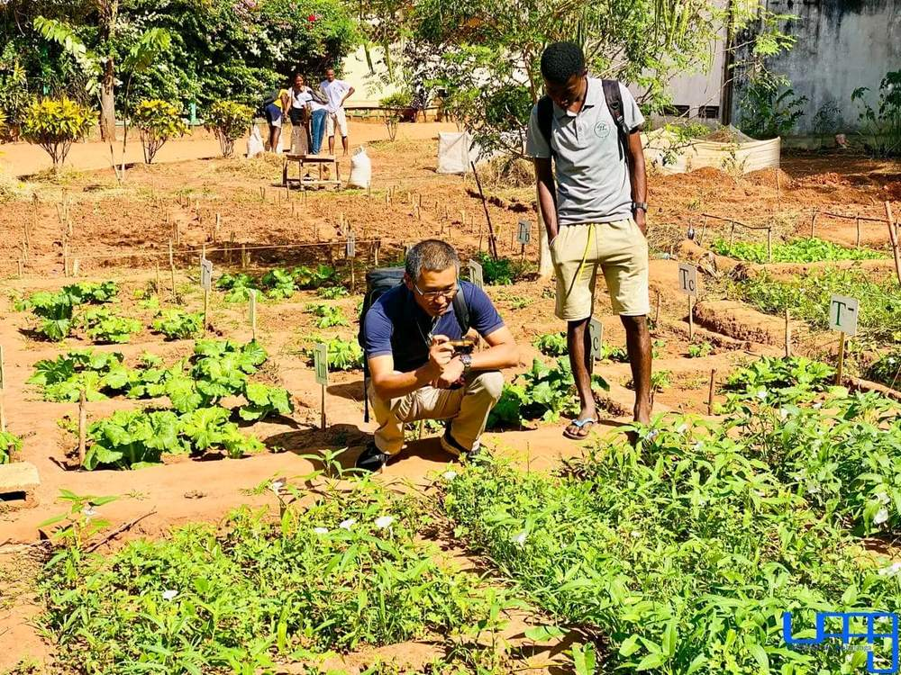
Mahazoa fototra ara-tsiansa, teknika ary teknolojia momba ny famokarana ara-pambolena. Misy asa fampiharana eny an-kianja sy ao amin'ny laboratoara, arahin'ny fanazaran-tena ao amin'ny tontolon'ny asa.
Fantaro ny teknika sy ny teknolojian'ny fiompiana, miorina amin'ny fototra ara-tsiansa matanjaka. Misy fampiharana ao amin'ny laboratoara sy eny an-kianja, miaraka amin'ny efitrano fampisehoana sy ny toeram-pambolena fampianarana.
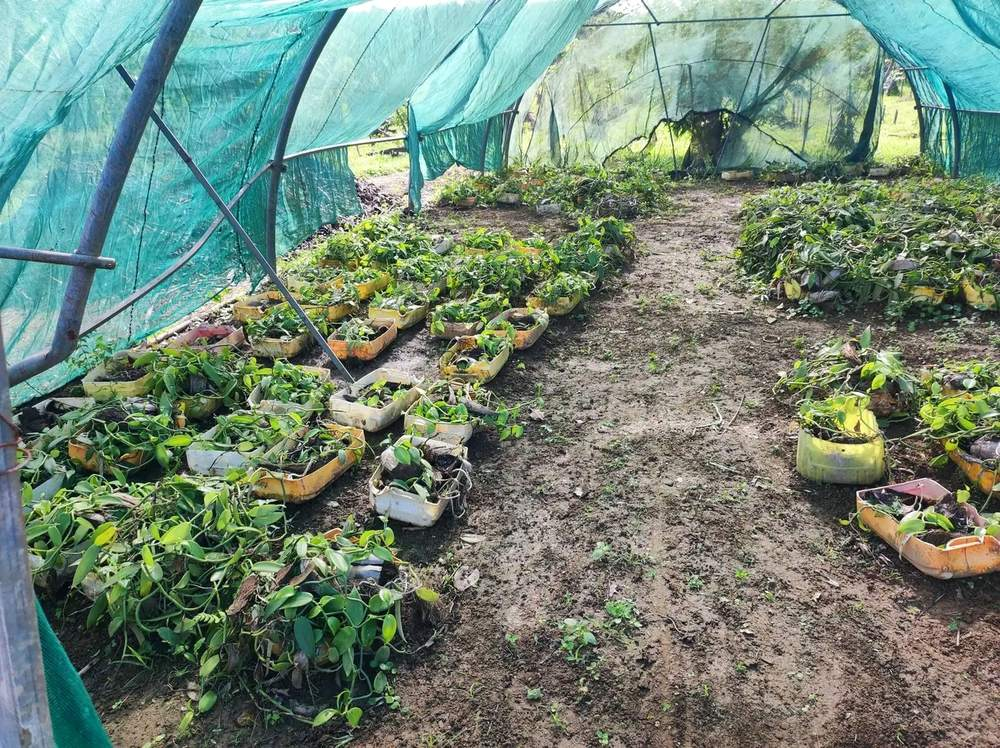
Mianara ny tontolo voajanahary sy ny olana mikasika azy, miaraka amin'ny fototra ara-tsiansa, ny teknika ary ny teknolojia eo amin'ny sehatry ny agronomia sy ny tontolo iainana. Misokatra ho an'ny mpitana Bakalorea A2 koa.

Mianara ny teknikan'ny jono sy ny fiompiana trondro, miaraka amin'ny fototra ara-tsiansa sy ny teknolojian'ny sehatra. Misy fampiharana ao amin'ny laboratoara sy eny an-kianja, ary fanazaran-tena ao amin'ny tontolon'ny asa.
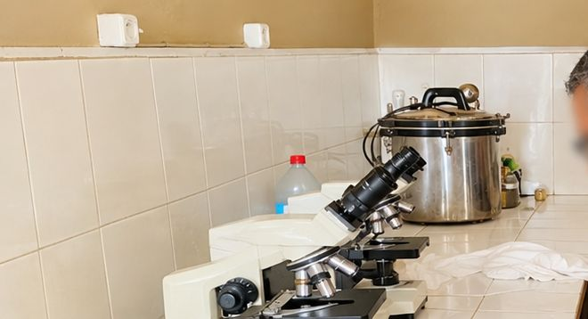
Famokarana biby sy fampandrosoana maharitra.Fanofanana injeniera amin'ny ambaratonga Mastera eo amin'ny siansa sy teknolojian'ny zavamananaina, ny biolojian'ny biby, ny fikarohana, ny fanavaozana ary ny fampandrosoana maharitra.
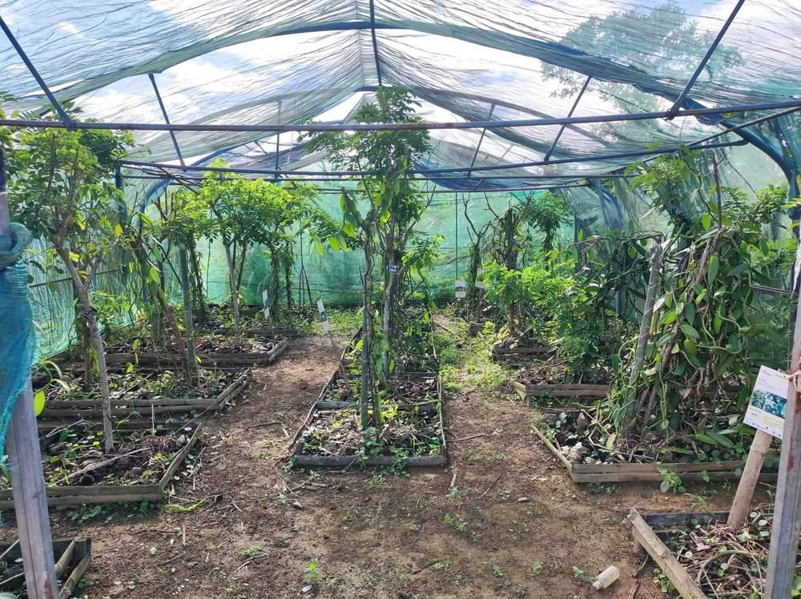
Famokarana zavamaniry tropikaly sy fampandrosoana maharitra.Fanofanana injeniera amin'ny ambaratonga Mastera eo amin'ny siansa sy teknolojian'ny zavamananaina, ny biolojian'ny zavamaniry, ny biotehnolojia, ny fikarohana, ny fanavaozana ary ny fampandrosoana maharitra.
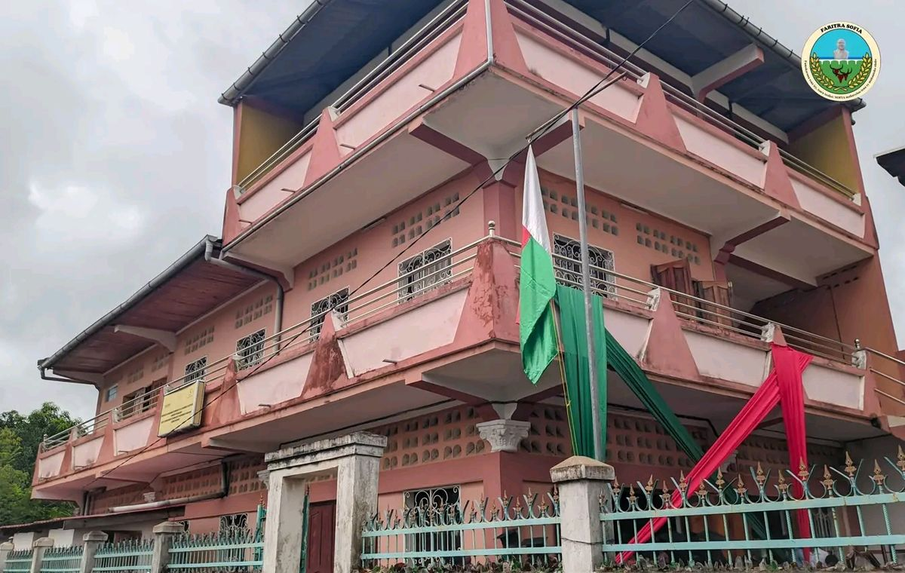
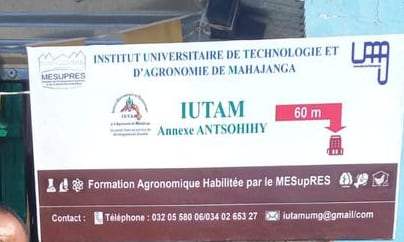
Sampan'ny IUTAM ao Antsohihy: fanofanana agronomika ekena avy amin'ny MESupReS. Fambolena, fiompiana, tontolo iainana, jono ary fiompiana trondro (ho ekena ho an'ny 2026-2027).
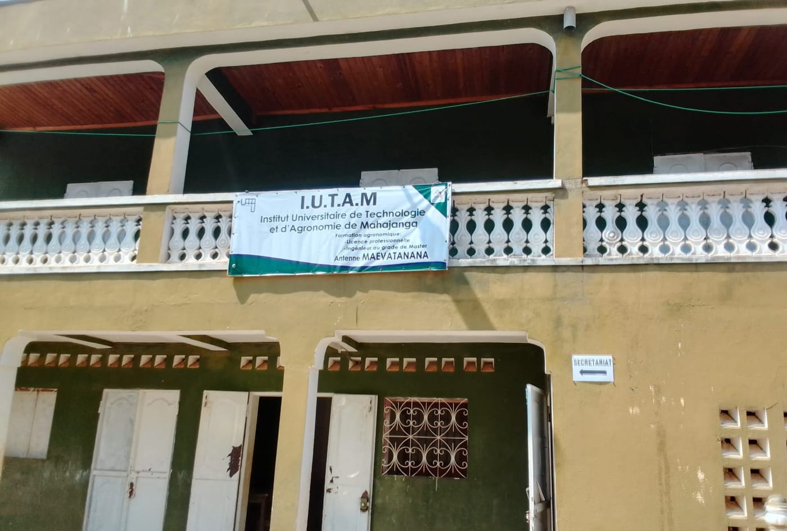
Mangataha fanazavana momba ireo lalam-pianarana atolotra ao Maevatanana (fambolena, fiompiana, tontolo iainana) amin'ny sekretaria ao amin'ny IUTAM Mahajanga.
Ireto avy ny asa azo kendrena arakaraka ny lalam-piofanana sy ny sehatra afaka mandray ireo nahazo diplaoma. Tokony hohamafisin'ny sekreteria ny anarana ofisialin'ny asa tsirairay.
Mampiditra…
Ny fidirana amin'ny Laisansa dia mifototra amin'ny fandinihana ny antontan-taratasy. Ny fidirana amin'ny diplaoma Injeniera amin'ny ambaratonga Mastera kosa dia mifototra amin'ny fandinihana ny antontan-taratasy sy ny dinidinika.
| Lalam-piofanana | Sokajin'ny Bakalorea ekena |
|---|---|
| Fambolena | C, D, S, OSE ary Agricole |
| Fiompiana | C, D, S, OSE ary Agricole |
| Tontolo iainana | A2, C, D, S, OSE ary Agricole |
| Jono sy Fiompiana anaty rano | C, D, S, OSE ary Agricole |
| Lalam-piofanana | Laisansa takiana |
|---|---|
| P.A.D.D. | Fiompiana, Tontolo iainana, Jono sy Fiompiana anaty rano, na lalam-piofanana mitovy lenta. |
| P.V.T.D.D. | Fambolena, Tontolo iainana, na lalam-piofanana mitovy lenta. |
Ireo dingana tokony harahina, hazavaina tsikelikely.
Mampiditra…
Tabilao ofisialin'ny saram-pianarana ao amin'ny IUTAM, arakaraka ny ambaratonga; aseho amin'ny Ariary.
| Famaritana | Vola |
|---|---|
| Saram-pisoratana anarana | 60 000 Ar |
| Saram-pitantanana ankapobeny | 15 000 Ar |
| Fiantohana ho an'ny mpianatra | 5 000 Ar |
| Fitafiana (Polo) | 30 000 Ar |
| Fandoavam-bola voalohany amin'ny saram-pianarana | 166 700 Ar |
| Fandoavam-bola faharoa amin'ny saram-pianarana | 166 700 Ar |
| Fandoavam-bola fahatelo amin'ny saram-pianarana | 166 700 Ar |
| Totalin'ny taona | 610 100 Ar |
Saram-pianarana L1 – L2
Fepetra fidirana, saram-pianarana, lalam-piofanana ary fiofanana anaty toeram-piasana: valin'ireo fanontaniana apetraka matetika.
Mampiditra…
Ireo vaovao farany avy amin'ny IUTAM.
Mampiditra…
Raiso indray mandeha isam-bolana ny daty fisoratana anarana, ny valim-panadinana na valin'ny fangatahana, ary ny vaovao momba ny IUTAM. Azonao atsahatra amin'ny fotoana rehetra ny fandraisana izany.